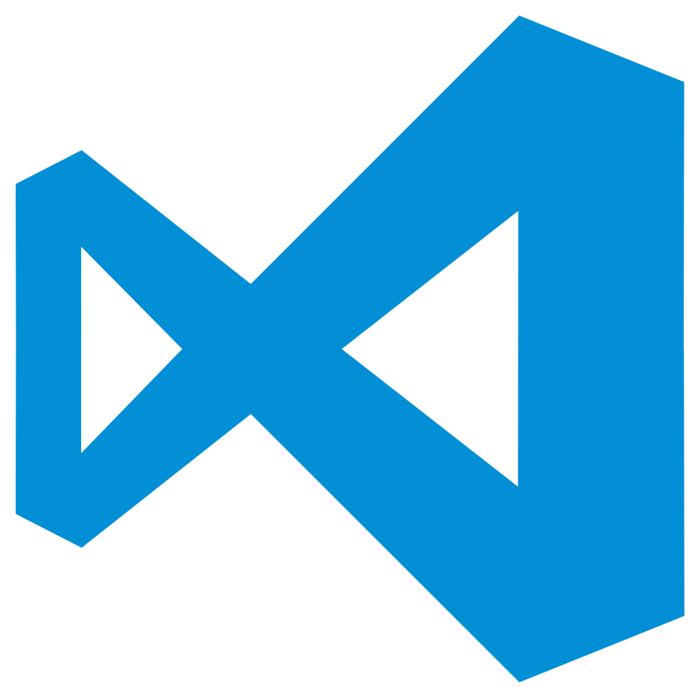

Visual Studio Code se basa en Electron, un framework que se utiliza para implementar Chromium y Node.js como aplicaciones para escritorio, que se ejecuta en el motor de diseño Blink. Aunque utiliza el framework Electron, el software no usa Atom y en su lugar emplea el mismo componente editor (Monaco) utilizado en Visual Studio Team Services (anteriormente llamado Visual Studio Online).
HTML no distingue entre mayúsculas y minúsculas, por lo que las etiquetas podrán escribirse con cualquier combinación de caracteres, buscando siempre la mejor legibilidad del documento. Sin embargo, determinados valores de atributos en los que sea importante respetar los cambios mayúscula/minúscula deben ir entrecomillados.